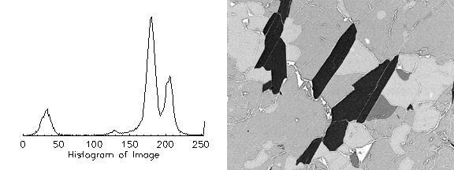
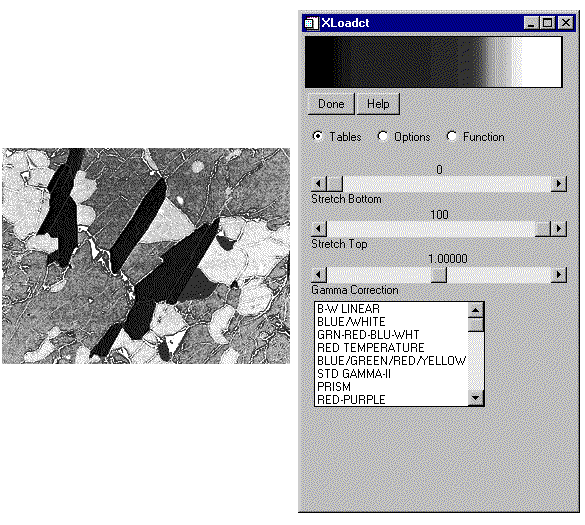
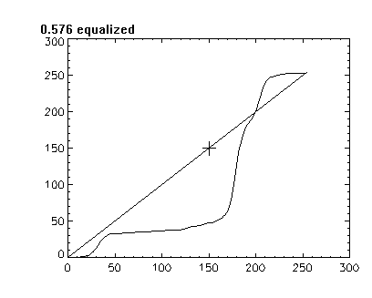

Resulting Image (left) and Color Table (right) of the Interactive Histogram Equalization in Direct Graphics

The H_EQ_CT procedure histogram-equalizes the color tables for an image or a region of the display. A pixel-distribution histogram is obtained, the cumulative integral is taken and scaled, and the result is applied to the current color table.
Histogram
equalization
is used to change either an image or its associated color table to display minor variations within nearly uniform areas of the image. The histogram of the image is used to determine where the image or color table should be equalized to highlight these minor variations. See “Working with Histograms” (Chapter 8,
Image Processing in IDL
) in the
help/pdf
directory of the IDL installation directory for more information on histogram equalization with Object Graphics.
This routine is written in the IDL language. Its source code can be found in the file h_eq_ct.pro in the lib subdirectory of the IDL distribution.
H_EQ_CT [, Image ]
A two-dimensional byte array representing the image whose histogram is to be used in determining the new color tables. If this value is omitted, the user is prompted to mark the diagonal corners of a region of the display. If Image is specified, it is assumed that the image is loaded into the current IDL window. Image must be scaled the same way as the image loaded to the display.
None.
The following example will apply histogram equalization to a color table associated with an image of mineral deposits to reveal previously indistinguishable features. This histogram equalization example is in Direct Graphics, which uses routines that directly work with the current color table. Since the concept of a current color table does not apply to Object Graphics, you must use histogram equalization routines that directly effect the image. See “Working with Histograms” (Chapter 8,
Image Processing in IDL
) in the
help/pdf
directory of the IDL installation directory for more information on histogram equalization with Object Graphics. Complete the following steps for a detailed description of the process.
Example Code: See histogramequalizing_direct. pro in the examples/doc/image subdirectory of the IDL installation directory for code that duplicates this example. Run the example procedure by entering hailstorm at the IDL command prompt or view the file in an IDL Editor window by entering .EDIT histogramequalizing_direct.pro . Note that the BLOCK keyword is set when using XLOADCT to force the example routine to wait until the Done button is pressed to continue. If the BLOCK keyword was not set, the example routine would produce all of the displays at once and then end.
| 1. | Determine the path to the mineral.png file: |
file = FILEPATH('mineral.png', $
SUBDIRECTORY = ['examples', 'data'])
| 2. | Import the image from the mineral.png file into IDL: |
image = READ_PNG(file)
| 3. | Determine the size of the imported image: |
imageSize = SIZE(image, /DIMENSIONS)
| 4. | If you are running IDL on a TrueColor display, set the DECOMPOSED keyword to the DEVICE command to zero before your first color table related routine is used within an IDL session or program: |
DEVICE, DECOMPOSED = 0
| 5. | Initialize the image display: |
LOADCT, 0
WINDOW, 0, XSIZE = 2*imageSize[0], YSIZE = imageSize[1], $
TITLE = 'Histogram/Image'
| 6. | Compute and display the histogram of the image. This step is not required to perform histogram equalization on a color table within IDL. It is done here to show how the histogram equalization affects the color table: |
brightnessHistogram = BYTSCL(HISTOGRAM(image))
PLOT, brightnessHistogram, XSTYLE = 9, YSTYLE = 5, $
POSITION = [0.05, 0.2, 0.45, 0.9], $
XTITLE = 'Histogram of Image'
| 7. | Display the image within the same window. |
TV, image, 1
The following figure shows the resulting histogram and its related image.
|
 |
| 8. | Use the H_EQ_CT procedure to perform histogram equalization on the current color table: |
H_EQ_CT, image
| 9. | Display the original image in another window with the updated color table: |
WINDOW, 1, XSIZE = imageSize[0], YSIZE = imageSize[1], $
TITLE = 'Histogram Equalized Color Table'
TV, image
Display the updated color table with the XLOADCT utility:
XLOADCT
Click on the Done button close the XLOADCT utility.
The following figure contains the results of the equalization on the image and its color table. After introducing intensity gradients within previously uniform regions of the image, the cracks are now more visible. However, some of the original features are not as clear. These regions can be clarified by interactively applying the amount of equalization to the color table.
|
 |
The histogram equalizing process can also be interactively applied to a color table with the H_EQ_INT procedure. The H_EQ_INT procedure provides an interactive display, allowing you to use the cursor to control the amount of equalization. The equalization applied to the color table is scaled by a fraction, which is controlled by the movement of the cursor in the x-direction. If the cursor is all the way to the left side of the interactive display, the fraction equalized is close to zero, and the equalization has little effect on the color table. If the cursor is all the way to the right side of the interactive display, the fraction equalized is close to one, and the equalization is fully applied to the color table (which is similar to the results from the H_EQ_CT procedure). You can click on the right mouse button to set the amount of equalization and exit out of the interactive display.
| 10. | Use the H_EQ_INT procedure to interactively perform histogram equalization on the current color table: |
H_EQ_INT, image
Place the cursor at about 130 in the x-direction, which is about 0.5 equalized (about 50% of the equalization applied by the H_EQ_CT procedure). You do not have to be exact for this example. The y-direction location is arbitrary.
Click on the right mouse button.
The interactive display is similar to the following figure.
|
 |
| 11. | Display the image using the updated color table in another window: |
WINDOW, 2, XSIZE = imageSize[0], YSIZE = imageSize[1], $
TITLE = 'Interactively Equalized Color Table'
TV, image
Display the updated color table with the XLOADCT utility:
XLOADCT
Click on the Done button close the XLOADCT utility.
The following figure contains the results of the equalization on the image and its color table. The original details have returned and the cracks are still visible.
|
|
|
Pre 4.0 |
Introduced |